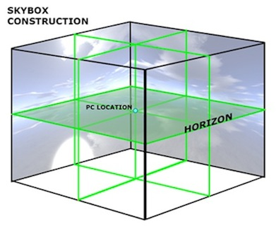

La tecnica dello skybox è una strategia estremamente semplice e ampiamente utilizzata per dare al giocatore l'impressione di trovarsi immerso in uno spazio aperto di grosse dimensioni. A tale scopo la scena viene idealmente inscritta all'interno di un cubo sulle cui facce interne viene applicata una particolare texture che raffigura lo scenario distante che vogliamo rappresentare. Le diverse immagini per le facce del cubo sono realizzate in modo da combaciare perfettamente l'una con l'altra e dare la sensazione di uniformità del paesaggio: il giocatore si sposta e orienta lo sguardo all'interno della scena e lo skybox resta solidale agli oggeti dell'ambientazione. Tecniche simili prevedono l'utilizzo di una sfera (o di una semisfera) piuttosto che un cubo ma il principio ispirante è del tutto simile.
Una skybox può mappare tutte le sue sei facce oppure trascurare quella inferiore se si prevede che esista sempre una qualche forma di suolo o ambientazione che comunque la nasconde (come nel nostro caso). Per realizzare le cinque o sei texture da applicare al cubo è possibile avvalersi di molti tool di supporto (tra cui il già citato Terragen) o di immagini già pronte e disponibili su numerosi siti dedicati all'argomento.
Nel realizzare questo semplice effetto grafico è comunque importante ricordarsi di mantenere il centro del cubo costantemente fissato con l'osservatore. Se si traslasse infatti il cubo assieme agli altri oggetti di scena, il giocatore potrebbe ravvicinarsi troppo a una delle quattro facce laterale e accorgersi dell'inganno. Pertanto il cubo della skybox (in modo del tutto analogo a quanto avviene per le luci direzionali) subisce quelle trasformazioni di vista che orientano le coordinata in relazione all'orientamento dello sguardo ma non quelle che lo traslano rispetto alla posizione della telecamera. In questo modo il cubo è sempre centrato sul giocatore: il cielo, le nuvole e il sole appaiono sempre alla stessa distanza.
Quest'ultima caratteristica è stata fonte di ispirazione per
numerose semplificazioni della procedura di rendering. Visto che il
cielo e l'orizzonte appaiono sempre lontani all'osservatori, non c'è
alcun motivo per cui la resa della skybox influenzi il depth buffer.
Mentre si disegnano le facce del cubo è quindi possibile
disabilitare il depth test: gli elementi di scena che verranno
successivamente disegnati andranno a coprire progressivamente la
linea dell'orizzonte senza il rischio che il cielo vada ad ostruire
qualche geometria.
Si ricordi che è inoltre possibile
disabilitare lo shading durante la resa della skybox visto che le
texture che la compongono tengono già conto dell'illuminazione
atmosferica
È poi possibile evitare di scalare il cubo in modo
che raggiunga le dimensioni della scena: per il modo in cui viene
disegnato è sufficiente renderizzare delle facce di lato ridotto e
costante (nel nostro caso si va da -1 a 1, si potrebbe fare anche da
-0.5 a 0.5). I vantaggi sono molteplici: si possono dare delle
coordinate semplici e – sopratutto – statiche, cioè indipendenti
dalla dimensione della scena, e si evita che il cielo possa
fuoriuscire dal tronco della piramide di vista e venire “tagliato”
fuori.
Infine, è possibile impostare dei filtri estremamente
veloci per le texture visto che le facce a cui sono applicate non si
allontanano o avvicinano mai all'osservatore e non è assolutamente
necessario prevedere dei livelli di mipmap.
Il codice della procedura per il rendering del cielo (renderSkybox(), definita in sky.h) prevede degli ulteriori passaggi per migliorare la resa dell'effetto di nebbia nel caso questo sia abilitato. Una spiegazione di questi passi addizionali viene fornita nella pagina dedicata a tale argomento.
Un'ultima considerazione finale: anche se le texture combaciano perfettamente tra di loro e i vertici vengono fatti combaciare esattamente: alcune implementazioni di OpenGL lasciano comunque intravedere i bordi delle facce, producendo un risultato decisamente spiacevole. Nelle diverse configurazioni in cui il progetto è stato testato solo in ambiente OS X e su un sistema Fedora virtualizzato (probabilmente a causa di uno scarso supporto dei driver all'accelerazione 3D). L' implementazione Mesa di OpenGL (la più diffusa tra le distribuzioni Linux) non ha mai evidenziato questo difetto.